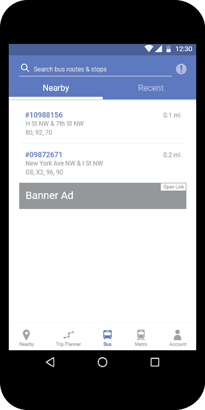

DC Metro App Redesign
Overview
Being a frequent commuter on public transportation in Washington, DC, I often encounter difficulties tracking buses and trains, whereas the DC public transportation isn’t often reliable. To deal with this problem, I have been using the app DC Metro, which has proved to be quite effective. However, I have noticed a lot of shortcomings which significantly reduce the app’s usability. The same applies to quite a few people I know, who also commute within the DMV area. Hence, I came up with the idea of redesigning the app to solve those problems.
The Challenge
My goals for the project surround the aim to make the app DC Metro more useful, usable, and satisfying for the user. These goals include:
Create a better navigation.
Elevate the visual interface.
Make it faster and easier to use the DC metropolitan public transportation system.
My Role
Since this is a personal project for practicing purposes, I took on most of the major roles of the UX design process: researcher, visual designer, and prototyper.
The Process
Research
I tested the existing DC Metro app with 5 participants, who are frequent commuters of the DMV public transportation system. During the tests, I asked questions that gave me insights of what obstacles the participants faced while trying to navigate the DC transportation system using the existing app.
From all the data collected from the tests, I created a list of challenges the participants faced while using the existing DC Metro app. Then, I picked out the most common challenges to focus on solving:
Lengthy process of obtaining desired real-time tracking
Limitations of the trip planner feature
Sketches / Wireframes

Mockups & Prototype
From my initial sketches, I selected the most promising solutions for the identified problems and began creating hi-fedelity mockups. From the mockups, I created a rapid prototype for validation.


User Testing & Iteration
Using the initial prototype, I tested with 5 participants using cognitive walkthrough, asking the same questions used during the preliminary research process, which focus on the obstacles the users may face while trying to tasks related to commuting. From the answers, I was able to figure out the weaknesses of my solutions. Then, based on my findings, I reiterated on a few components of the prototype and finally reached a final version of the redesign.
The Final Design
The Existing DC Metro App
The initial design features an overcrowded side menu, creating a clunky experience especially while a user is on the go. The general layout is heavily text-based without much visual indication for the user's current location and nearby public transportation.

The Redesign
The redesign features a much more visual, map-based interface, which offers a more convenient bottom menu navigation. This allows faster ways for users to complete Metro-related tasks usch as searching for transport options and tracking vehicles.
The "Nearby" tab shows all the bus and Metro stations around the user's location. Users can also easily search for places, stations and directions from this tab.

The "Bus" and "Metro" tabs give off details of bus and Metro stations. Users can seamlessly navigate through information about each station, route, and live updates.


From the "Account" tab, users can easily access their saved stations, routes, and places. This enables quick access to the saved items so that users can get the information they frequently need while commuting.

The initial design features an overcrowded side menu, creating a clunky experience especially while a user is on the go. The general layout is heavily text-based without much visual indication for the user's current location and nearby public transportation.
The redesign features a much more visual, map-based interface, which offers a more convenient bottom menu navigation. This allows faster ways for users to complete Metro-related tasks usch as searching for transport options and tracking vehicles.
The "Nearby" tab shows all the bus and Metro stations around the user's location. Users can also easily search for places, stations and directions from this tab.
The "Bus" and "Metro" tabs give off details of bus and Metro stations. Users can seamlessly navigate through information about each station, route, and live updates.
From the "Account" tab, users can easily access their saved stations, routes, and places. This enables quick access to the saved items so that users can get the information they frequently need while commuting.